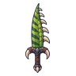
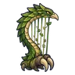

แร็พเตอร์ใบไม้
มอนธาตุดิน Lv 72–99
เจอที่
| แมพ | โซน | Lv | ในแมพ | ภูมิภาค |
|---|---|---|---|---|
| ป่าดึกดำบรรพ์ | หุบรังไข่ · ใจกลางป่าโบราณ | 88–99 | ≈44 | ที่ราบสูง |
| บ่อน้ำร้อนดึกดำบรรพ์ | ลานหินปูนขั้นบันได | 72–92 | ≈21 | ที่ราบสูง |
| หนองน้ำมันดิน | 72–84 | ≈17 | ที่ราบสูง | |
| หุบเฟิร์นยักษ์ | 74–92 | ≈11 | ที่ราบสูง | |
| หอดาวร่วง | ชั้นหอดาวร่วง | 89–99 |
≈ จำนวนที่อยู่ในแมพพร้อมกันโดยเฉลี่ย คิดจากไฟล์เกม (จุดเกิดของแมพ × 4 แบ่งตามสัดส่วนของแต่ละตัว) ตายแล้วเกิดใหม่ที่เดิมใน 22 วินาที · ตอนเล่นออนไลน์เซิร์ฟเวอร์เป็นคนเกิดมอน อาจไม่ตรง
ค่าสถานะตามเลเวล
| Lv | HP | ATK | DEF | MDEF | EXP | Job |
|---|---|---|---|---|---|---|
| 72 | 34,977 | 179–268 | 29 | 11 | 103 | 67 |
| 85 | 56,957 | 221–331 | 34 | 13 | 120 | 78 |
| 99 | 86,969 | 280–419 | 40 | 15 | 138 | 90 |
ตีด้วยธาตุไหนดี
แรงขึ้น: ไฟ ×1.5 พิษ ×1.25
เบาลง: ลม ×0.5 ดิน ×0.25
วัตถุดิบที่ดรอป
| ของ | โอกาส | |
|---|---|---|
| กรงเล็บแร็พเตอร์ | 55% | 1 ชิ้น (15% ได้ 2) |
อุปกรณ์ที่ดรอป (10)
| ของ | โอกาส |
|---|---|
| 0.25% | |
| 0.25% | |
| 0.25% | |
| 0.12% | |
| 0.12% | |
| 0.12% | |
| 0.12% | |
| 0.12% | |
 ดาบใหญ่หางแร็พเตอร์ | 0.06% |
 เครื่องดนตรีแร็พเตอร์ใบไม้ | 0.06% |
สกิล
หอนเรียกฝูง (Lv 25+) · หอนเรียกฝูง (Lv 60+) · กระโจน (Lv 60+)